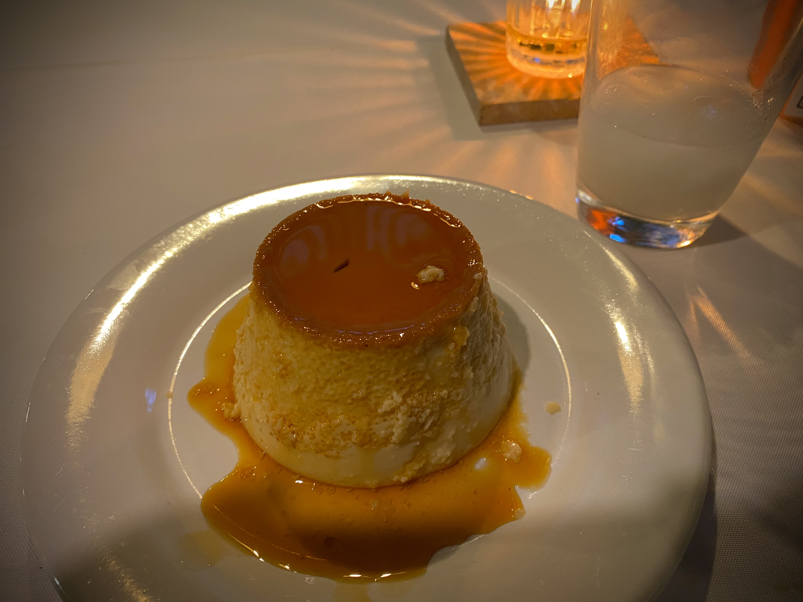

Flan
, via Wikimedia Commons" width="600" height="500">
Description
This is a recipe for flan, a comforting caramel custard popular in Latin America.
In some parts of the world this is also known as creme caramel or caramel pudding. This is not to be confused with the British sponge pastry also called 'flan'.
Ingredients
- sugar
- milk
- 2 eggs
- 2 egg yolks
Steps
- Preheat oven
- Melt 1/2 cup sugar, pour into ramekins
- boil milk, and stir into beaten eggs and egg yolks. stir in sugar, pour into ramekins
- place ramekins in roasting pan, add warm water until about 3/4 inch deep
- bake 40 minutes, let cool, serve